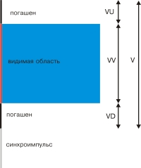
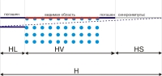
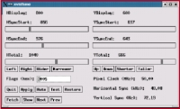

Несколько практических приемов настройки монитора и другой
периферии для работы с графическим сервером XFree86 4-ой
версии: монитора, мыши, клавиатуры. Предлагаемые знания имеют
универсальный характер и с небольшими изменениями могут быть
применены и для третьего поколения этого сервера.
При старте графический сервер X считывает параметры
своей конфигурации, хранящиеся в файле XF86Config-4 (для
версий 3.x.x - XF86Config). Обычно этот файл располагается в
директории /etc/X11 и имеет секционную структуру,
формируемую тегами Section <имя секции> и
EndSection - причем сами теги являются регистронезависимыми и
символ подчеркивания (_) игнорируется. Существует
12 типов секций, из которых работать, как правило,
приходиться со следующими:
- InputDevice. Описывает устройства ввода
информации, которыми в нашем случае являются мышка и
клавиатура. Предыдущий формат описаний для этих целей
предполагал теги Keyboard и Pointer. Они еще поддерживаются
в целях совместимости и могут появиться, если
XF86Config-4 создается при помощи вспомогательных
средств, таких как Xconfigurator;
- Device - описание видеокарты;
- Monitor - описание параметров монитора;
- Modes. Специальный параметр, определяющий
специфические режимы работы монитора: частоту,
синхронизацию, разрешение и др.;
- Screen. Объединяет монитор и видеокарту в единую
графическую систему.
Конфигурирование устройств ввода
Начнем с настройки клавиатуры. Найдем раздел InputDevice
или Keyboard и посмотрим, что здесь можно сделать (для
наглядности будем рассматривать в качестве примера реально
существующую конфигурацию).
Section "InputDevice"
Identifier "Keyboard0"
Driver "keyboard"
Option "XkbLayout" "ru (winkeys)"
Option "XkbOptions" "grp:ctrl_shift_toggle,grp_led:scroll"
EndSection |
Наиболее интересны для нас опции, передаваемые демону xkb,
отвечающему за выбор раскладки клавиатуры. Так, строка
Option "XkbLayout" "ru (winkeys)" |
указывает на необходимость загрузки англо-русской
раскладки, описываемой в системном файле ru, который находится
в папке /usr/X11R6/lib/X11/xkb/symbols (для RH-совместимых
ОС). Причем в этом файле выбирается раздел (winkeys),
описывающий Windows-подобную конфигурацию раскладки. Следует
заметить, что современная программа xkb "понимает" только
опции, передаваемые ей через правила (rules), так что
необходимо использовать тег Option. Для
англо-украинско-русской или англо-украинской раскладки нужно
изменить этот тег соответствующим образом:
Option "XkbLayout" "ru_UA (winkeys)"
# англоукраинскорусская |
или
Option "XkbLayout" "ua (winkeys)"
# англоукраинская |
Одной из первых линукс-сборок с украинской раскладкой был
BlackCat. Но, к сожалению, в нем файл ru_UA содержал ошибку, а
именно: блок winkeys начинался так:
в то время как должен был так:
Поэтому, чтобы пользоваться украинскими буквами,
приходилось вручную редактировать этот файл. Данный недостаток
успешно кочевал в другие линукс-пакеты, пока, наконец,
ASP Linux 7.3 не расставила все точки над "i".
Кроме того, в этой версии знак украинского апострофа
наконец-то был прикреплен там, где ему и место - слева от "1".
Очень рекомендую использовать xkb именно из этого
продукта.
Итак, украинская раскладка установлена. Как будем
переключаться? Для этого существует правило XkbOptions. В
нашем случае для изменения раскладки оно определяет комбинацию
клавиш <Ctrl> + <Shift>. Если же хочется
использовать <Alt> + <Shift>, нужно записать:
grp:alt_shift_toggle,grp_led:scroll |
Кроме того, grp_led:scroll означает, что о состоянии
текущей раскладки будет информировать индикатор клавиатуры
Scroll Lock. Дополнительную информацию о настройке
раскладки клавиатуры под xkb можно получить, например, из статьи
Ивана Паскаля.
Теперь перейдем к настройке мыши. Иногда это приходится
делать после изменения конфигурации системы - например, если
"последовательную" мышь заменили на PS/2 или приобрели
манипулятор с колесиком. Раздел с соответствующими параметрами
выглядит так:
Section "InputDevice"
Identifier "Mouse0"
Driver "mouse"
Option "Device" "/dev/mouse"
Option "Protocol" "PS/2"
Option "Emulate3Buttons" "on"
Option "ZAxisMapping" "4 5"
EndSection |
Строка
Option "Device" "/dev/mouse" |
прямо или косвенно указывает на порт, к которому подключена
мышь. В нашем случае этим портом является символическая ссылка
/dev/mouse. При необходимости можно создать ее самому, указав
правильное устройство. Например, команда
ln -s /dev/ttyS0 /dev/mouse |
создает ссылку на порт com 1, а команда
ln -s /dev/psaux /dev/mouse |
- на порт PS/2. Тег
определяет протокол работы с манипулятором. Если
используется последовательная мышь, то в качестве протокола
используется Microsoft, а если мышь с колесиком - то
IntelliMouse для COM-порта и IMPS/2 для порта PS/2.
Emulate3Buttons определяет, будет ли одновременное нажатие
правой и левой кнопки мыши интерпретироваться как клик средней
(третьей) кнопки, даже если ее физически нет. ZaxisMapping
"4 5" означает, что прокручивание колесика вперед будет
интерпретироваться X-сервером как нажатие
кнопки <4>, а назад - как кнопки <5>.
Остальное возлагается на приложения. Обычно программы
используют эти кнопки для прокрутки содержимого окон.
Настройка монитора
Прежде чем описывать параметры конфигурационного файла,
необходимо ознакомиться с техническими особенностями работы
дисплея ПК. Любознательным рекомендую прочитать по этой теме
хорошую статью
Игоря Николаева и соответствующее How-To.
Картинка формируется на экране следующим образом.
Видеокарта инициирует движение луча ЭЛТ-монитора, заставляя
его подсвечивать пиксели. Луч движется слева направо со
скоростью, определяемой частотой генерации точек видеокарты
(dot clock). Эта величина (DC) имеет верхний предел, но даже у
старых видеокарт этот предел превышает 100 МГц, так что
он редко является сдерживающим фактором для реализации
необходимой частоты развертки.
Таким образом, луч проходит HV видимых точек. Далее следует
сигнал, гасящий, но не останавливающий луч. Это необходимо,
чтобы избежать искажений по краям изображения. Такое состояние
"захватывает" еще HR точек. Когда луч достигает правого края
строки, видеокарта генерирует так называемый горизонтальный
синхроимпульс. Луч возвращается в свое "левое" положение и
сдвигается на одну строку вниз. Длительность такого импульса
должна быть достаточной, чтобы стабилизировать ЭЛТ для
генерации следующей горизонтальной строки. Будем считать, что
времени синхроимпульса достаточно, чтобы луч успел "пробежать"
HS точек. Находясь в левом крайнем положении и в выключенном
состоянии, луч проходит HL точек, блокируя краевые эффекты.
Полный цикл движения луча по горизонтали завершен.

Аналогичным образом организовано движение луча по
вертикали. Его основными параметрами будут:
VV - количество видимых строк;
VD - количество строк от нижнего края до начала
вертикального синхроимпульса;
VS - длительность вертикального синхроимпульса;
VU - верхний отступ до первой строки.

Для пользователя эти технические подробности выливаются в
такую важную величину, как частота смены кадров F. При
частоте в 60 Гц работать можно, но большинство будет
замечать мерцание люминофора, что очень вредно для здоровья.
Нужно стремиться установить частоту работы монитора выше
75 Гц - и чем больше, тем лучше.
Так вот, полное число точек, формирующих кадр, будет HxV,
где
H = HV + HR + HS + HR,
V = VV + VD + VS + VU
Чтобы эта матрица точек прорисовывалась с частотой F, нужно
установить частоту видеокарты равной
Как уже говорилось, с видеокартой проблем обычно не
возникает. Частота смены кадров может ограничиваться
недостаточной максимальной частотой строчной развертки
монитора (FH).
Действительно, если такая частота равна FH, то условная
матрица из одной строки будет разворачиваться с частотой
FH, а матрица из V строк - с пропорционально меньшей
частотой HF/V. Например, если частота строчной развертки
монитора составляет 55 KГц, то при разрешении 1024 x
768 частота смены кадров ограничена величиной
55000/768 = 72 Гц. На самом деле она меньше,
ведь V < VV. Вот примеры из реальной жизни: в
таблице указаны максимальные частоты развертки мониторов и
частоты смены кадров для различных режимов. Как видно из нее,
монитор с частотой горизонтальной развертки меньше 55 KГц
лучше не покупать.
Теперь посмотрим, какое отношение все это имеет к XFree86.
Для этого заглянем в журнал запуска X-сервера - файл
/var/log/XFree86.0.log:
..............
(II) NV (0): Monitor: Using hsync range of 37.00-93.00 kГц
(II) NV (0): Monitor: Using vrefresh range of 70.00-100.00 Гц
(II) NV (0): Clock range: 12.00 to 256.00 MГц
........................................................................
.......................................................................
(II) NV (0): Not using default mode "800x512" (vrefresh out of range)
(II) NV (0): Not using default mode "1920x1200" (insufficient memory for mode)
(**) NV (0): Virtual size is 1024x768 (pitch 1024)
(**) NV (0): Default mode "1024x768": 94.5 MГц, 68.7 kГц, 85.0 Гц
(II) NV (0): Modeline "1024x768" 94.50 1024 1072 1168 1376 768 769 772 808 +hsync +vsync
(**) NV (0): Default mode "800x600": 56.3 MГц, 53.7 kГц, 85.1 Гц
(II) NV (0): Modeline "800x600" 56.30 800 832 896 1048 600 601 604 631 +hsync +vsync
(**) NV (0): Default mode "640x480": 74.2 MГц, 85.9 kГц, 85.1 Гц (D)
NV (0): Modeline "640x480" 74.25 640 672 752 864 480 480 482 505 doublescan +hsync +vsync |
Во время загрузки ОС определяет базовые параметры работы
графической подсистемы: частота строчной развертки (hsync) -
37,00-93,00 KГц, вертикальной развертки (vrefresh) -
70,00-100,00 Гц, видеокарты - 12,00-256,00 MГц.
После этого X пытается в автоматическом режиме воссоздать
возможные режимы работы монитора при разных разрешениях и
частотах кадров. Например, мы видим, что наша система может
работать при разрешении 1024 x 768 с частотой кадровой
развертки 85 Гц. А такое разрешение, как 800 x 512,
вообще не удалось реализовать. Если пользователь не указывает
этого специально, Linux самостоятельно выбирает приемлемый
режим. Обратим внимание на следующие строки:
(**) NV (0): Default mode "1024x768": 94.5 MГц, 68.7 kГц, 85.0 Гц
NV (0): Modeline "1024x768" 94.50 1024 1072 1168 1376 768 769 772 808 +hsync +vsync |
Последняя требует пояснения. В специальной терминологии она
называется "модлайн" и имеет следующий формат:
Modeline "имя_моды" DC HV HR HS H VV VR VS V |
Значения условных обозначений вы уже знаете. X раздает
имена модам согласно разрешениям: "800 x 600", "1024 x 768"
и т.д. Флаги +hsync и +vsync определяют прямой или
инвертированый уровень импульсов видеокарты. Они могут иметь
знак "минус" или вообще отсутствовать. Иногда их приходится
подбирать экспериментальным путем.
Теперь скажем несколько слов о том, как параметры,
необходимые для правильной работы дисплея, описываются в
XF86Config-4. В этом процессе участвуют три секции: Device,
Monitor, Screen.
Device определяет модуль видеокарты, и для ручной настройки
можно воспользоваться программой Xconfigurator.
В разделе Monitor описываются параметры дисплея ПК: строка
Identifier определяет условный идентификатор монитора в
пределах файла. VendorName - необязательный параметр,
указывающий производителя и модель. Более важную информацию
несут значения вертикальной и горизонтальной синхронизации,
HorizSync 37-93 и VertRefresh 70-75. При
сканировании режимов работы XFree не будет превышать эти
величины, чтобы не вывести из строя монитор. В разделе Monitor
также определяются необходимые моды:
# 1024x768 @ 60 Гц, 48.4 kГц hsync
Modeline"1024x768"65 1024 1032 1176 1344 768 771 777 806 -hsync -vsync |
Если в конфигурационном файле есть мода HHHxVVV, то она
перекроет свою "тезку", создаваемую в автоматическом режиме
при загрузке X.
Чтобы согласовать параметры монитора и видеокарты,
используется раздел Screen. В нем подраздел Device содержит
параметры видеокарты, а Monitor - параметры дисплея. Обратите
внимание на параметр DefaultColorDepth, определяющий
количество цветов на экране. Не забывайте, что для реализации
необходимой глубины цвета видеокарта должна обладать
достаточным объемом памяти. Впрочем, для современных карт это
не проблема. А подсчитать необходимое количество памяти можно
по формуле:
где H - разрешение по горизонтали, V - разрешение по
вертикали, B - количество байт, отводимых на оцифровку цвета.
Для 256-ти цветов B=1, для 65536-ти цветов - B=2, для 16-ти
миллионов - B=3. Таким образом, из нескольких подсекций будет
выбрана та, которая обладает подходящим значением Depth.
Далее указывается необходимая мода. Строка Virtual
определяет виртуальное разрешение экрана дисплея. Обычно оно
совпадает с действующим, но может быть и большим. Тогда на
экране отображается только часть изображения, а для
перемещения видимой части используется мышка. Для наглядности
приведем пример:
Section "Monitor"
Identifier "Monitor"
VendorName "PHL"
HorizSync 37-93
VertRefresh 70-75
#640x480 @ 75.0 Гц, 37.5 kГц hsync
Modeline"640x480"31.5 640 656 720 840 480 481 484 500 -Hsync -Vsync
# 1024x768 @ 60 Гц, 48.4 kГц hsync
Modeline"1024x768"65 1024 1032 1176 1344 768 771 777 806 -hsync -vsync
EndSection
Section "Screen"
Driver"Accel"
Device"NVidia / SGS Thomson|Riva128"
Monitor"Monitor"
DefaultColorDepth16
SubSection "Display"
Depth16
Modes"1024x768"
Virtual1024x768
EndSubSection
EndSection |
Исходя из своей скромной практики, я сделал вывод, что
существует два основных способа подстройки монитора средствами
X86Config-4.

Предположим, у нас все работает, но работает плохо. Монитор
мигает, хотя должен функционировать на нормальной частоте.
Определить режим работы дисплея в Gnome или KDE можно с
помощью команды xvidtune.
Одной из возможных причин такого состояния может быть
неправильная настройка модлайна в файле настройки
X. Определив с помощью xvidtune разрешение монитора,
например 800 x 600, можно найти все модлайны с таким именем и
"закомментировать" их в расчете на то, что при старте X
автоматически подберет оптимальные параметры.
В примере, приведенном выше, выбрана неудачная мода 1024 x
768 @ 60 Гц. "Закомментируем" ее: ведь мы знаем, что
"автоматическая" мода "1024 x 768" работает на частоте
85 Гц.

Хуже, если X не в состоянии самостоятельно правильно
настроить работу монитора. Придется генерировать моду другими
способами. Вообще писать ее "с нуля" - тяжкий труд. Облегчают
его различные утилиты. Например, неплохо справляется с этой
задачей веб-скрипт Modeline
tool.
Вот, например, что предлагает эта утилита для реализации
моды 1024 x 768 @ 85 Гц:
Modeline "1024x768" 97.40 1024 1072 1192 1416 768 768 771 809 94.50 |
Очень близко к данным, которые содержатся в приведенном
выше фрагменте. Если этот способ не работает, попробуйте
другие утилиты, которых достаточно в интернете (например xtiming.sourceforge.net).
В особо сложных случаях следует предварительно изучить
упомянутую документацию и пробовать воссоздать необходимые
параметры самостоятельно. Тогда недостаток данного метода
может превратиться в его достоинство: таким образом можно
"выжать" из монитора дополнительные герцы или установить
нестандартное разрешение. Так, мне удалось на 15-дюймовом
мониторе получить разрешение 926 x 698 - при работе в Web это
удобнее, чем стандартные 800 x 600.
В заключение - несколько дополнительных замечаний и
советов. Для описания мод существует альтернативный способ -
подсекция Mode:
Mode "имя моды"
DotClock частота_видеокарты
HTimings HV HR HS H
VTimingVV VR VS V
Flags+(-) hsync +(-) vsync |
Если X запускается скриптом startx после регистрации
пользователя, то существует возможность создания для каждого
пользователя собственной конфигурации XF86Config-4. Дело в
том, что при старте X ищет свой конфигурационный файл в
следующей последовательности:
/etc/X11/<cmdline>
/usr/X11R6/etc/X11/<cmdline>
/etc/X11/$XF86CONFIG |
где cmdline - параметр, указываемый серверу X при помощи
ключа -xf86config. Если его не указывать, то, манипулируя
переменной $XF86CONFIG, можно загружать свои параметры для
каждой сессии.
Если Linux автоматически стартует в графическом режиме, что
приводит к краху системы,- не остается ничего другого, как
попытаться исправить неприятность, загрузив ОС в текстовом
режиме. Иногда пользователь затрудняется изменить режим
запуска системы. А ведь это просто. Надо лишь при старте lilo
передать процессу init требуемый параметр: 3 для
текстового и 5 - для графического режима.
Вот и все. Настройте систему так, как удобно
вам!